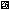

黒い正方形の一辺：15cm（白い余白を含めない）
A4用紙に「実際のサイズ / 100%」で印刷してください。自動縮小・余白調整を無効にし、印刷後に黒い正方形を定規で測ってください。
↑ この向きを上にして壁へ貼る

この線は10cm（印刷倍率の確認用）ステージを表示したい中心に、平らに貼ります。白い余白を残し、折り目・反射・物による隠れを避けてください。アプリの「マーカーの一辺」を黒い正方形の実測値に合わせ、マーカー全体を背面カメラに映します。マーカーが見えなくなるとステージも非表示になります。
ARUCO_MIP_36h12 / ID 0 · カメラ位置は画像からの推定です。部屋全体の空間認識ではありません。